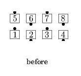
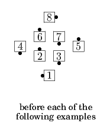
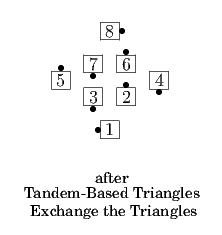
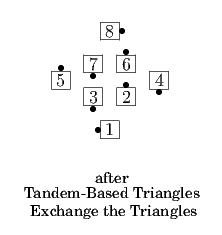
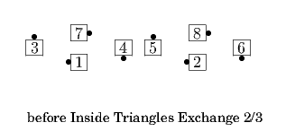
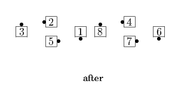

Exchange the Boxes / Triangles
To perform an "Exchange", dancers in two adjacent similar formations circulate, first in their own formation, and then in the adjacent formation. The total number of circulates for a full Exchange is equal to the number of positions in a single formation of that type. Dancers circulate in their own formation until they reach their "exchange point", which is the point in their normal circulate path when they are closest to, but not facing away from, the center of the overall formation. Their next circulate is into the other formation, crossing over to the spot in that formation which corresponds to the one where they would have gone for a normal circulate. Once they have crossed over into the other formation, they stay to the outside of any dancers who are still circulating in their original formation, but finish at the end of the call on the footprints of the original formation when possible.
Exchange the Boxes
From a 2x4 formation: Do a total of four Split Circulates except that when you reach your exchange point (when you are an in-facing Center) do your next Circulate to the diagonal opposite position (crossing over into the other Box). In most cases there will be one Center from each Box who will lead the Exchange and everyone else in their Box can follow them. A full exchange ends in a 2x4 formation; Mini-Wave Boxes end in opposite-handed Mini-Wave Boxes.


Exchange the Triangles
From Twin Triangles: Do a total of three Triangle Circulates except that when you reach your exchange point do your next Circulate to the other Triangle. From Apex-to-Apex Triangles, the exchange point is the apex and this Circulate is an Interlocked Triangle Circulate; from Base-to-Base Triangles, the exchange point is when you are a base facing into the center of the set and this Circulate is to the diagonal opposite position. RH or LH Triangles end in opposite-handed Triangles.

 



© Copyright 2004-2017 Vic Ceder and CALLERLAB Inc., The International Association of Square Dance Callers. Permission to reprint, republish, and create derivative works without royalty is hereby granted, provided this notice appears. Publication on the Internet of derivative works without royalty is hereby granted provided this notice appears. Permission to quote parts or all of this document without royalty is hereby granted, provided this notice is included. Information contained herein shall not be changed nor revised in any derivation or publication.